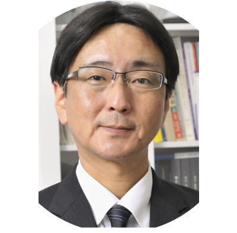
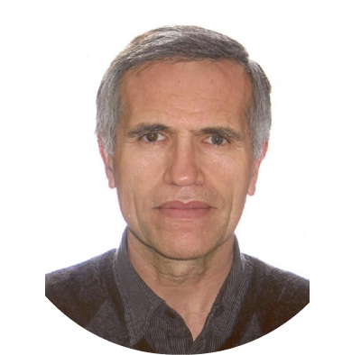

Preliminary Program
10 - 14 September 2024 / Jakarta
Workshops & Teaching Course
| WORKSHOP DAY 1 | September 10th 2024 | |||
|---|---|---|---|---|
| Time Schedule | Room 1 | Room 2 | Room 3 | Room 4 |
| 08.00 - 12.00 | EEG Basic Course | Neuromodulation | Basic NCS-EMG Teaching Course | Basic PSG Teaching Course |
| 13.00 - 17.00 | EEG Advanced Course | Advanced NCS-EMG SFEMG Teaching Course | Nerve and Muscle Hyperexcitability Course | |
| WORKSHOP DAY 2 | 11 September 2024 | |||
|---|---|---|---|---|
| Time Schedule | Room 1 | Room 2 | Room 3 | Room 4 |
| 08.00 - 12.00 | Continuous EEG monitoring: patterns, analysis, treatment, and implementation | Basic IONM Course | NMUS Workshop | EMG and EP in Pediatric Course |
| 13.00 - 17.00 | Advanced IONM Course | EEG in Neonatal and Children | ||
EEG Basic Course
September 10th 202408.00 - 12.00
| Topic | Speaker |
|---|---|
| Basic principles and Normal Adult EEG | Lynn Liu (USA) |
| Normal EEG Variants | Suryani Gunadharma (Indonesia) |
| Artifacts | Ricardo Kienitz (Germany) |
| Abnormal Adult EEG: Epileptiform abnormalities | Kheng Seang Lim (Malaysia) |
| Abnormal Adult EEG: Non-Epileptiform abnormalities | Peter Kaplan (USA) |
| How to analyze EEG with Advance methods | Eishi Asano (USA) |
| Discussion | |
EEG Advanced Course
September 10th 202413.00 - 17.00
“Epilepsy Surgery: Ictal Semiology - Pre-surgery Evaluation”
| Topic | Speaker |
|---|---|
| Semiology and Ictal EEG of Temporal Lobe Epilepsy | John Dunne (Australia) |
| Semiology and Ictal EEG of Frontal Lobe Epilepsy | Suryani Gunadharma (Indonesia) |
| Epileptic Zone: Definition and Concept (How to determine epileptic zone) | Aatif Husain (USA) |
| Multimodality neuroimaging evaluation in focal epilepsy | Niels Focke (Germany) |
| Intracranial EEG monitoring | Margita Seeck (Switzerland) |
| Case Discussion | Aris Catur Bintoro (Indonesia) |
Continuous EEG Monitoring: Patterns, Analysis, Treatment, and Implementation
September 11th 202408.00 - 17.00
| Topic | Speaker |
|---|---|
| Indications for cEEG monitoring | Astri Budikayanti (Indonesia) |
| Periodic and rhythmic discharges | Michael Fong (Australia) |
| Epileptic Zone: Definition and Concept (How to determine epileptic zone) | Aatif Husain (USA) |
| Ictal-interictal continuum | Michael Fong (Australia) |
| Quantitative EEG primer | M Brandon Westover (USA) |
| SE treatment calculus | Aatif Husain (USA) |
| Treatment of SE in resource limited setting | Fitri Octaviana (Indonesia) |
| Cardiac arrest: patterns and treatment considerations | Michel J.A.M van Putten (Netherlands) |
| Implementing cEEG in resource limited settings | Astri Budikayanti (Indonesia) |
| ICU EEG cases | Adrian Ridski Harsono (Indonesia) |
Neuromodulation Workshop
September 10th 202408.00 - 17.00
| Topic | Speaker |
|---|---|
| Localize the hotspot; measurement of Central motor conduction studies and clinical utilities | Hideyuki Matsumoto (Japan) |
| Peripheral motor conduction studies and clinical utilities. Cauda equina conduction time | Hideyuki Matsumoto (Japan) |
| Short interval intracortical inhibition (SICI) | Ritsuko Hanajima (Japan) |
| Cerebellar motor cortical inhibition | Takenobu Murakami (Japan) |
| Group Demonstration | |
| Cases/ Q&A Session | |
| Theta burst stimulation (TBS) | Amanda Tiksnadi (Indonesia) |
| Quadripulse stimulation | Ritsuko Hanajima (Japan) |
| Static magnetic stimulation (SMS) | Robert Chen (Canada) |
| Transcranial direct and alternating current stimulation (tDCS, tACS) | Franca M Tecchio (Italy) |
| Transcutaneous auricular vagal nerve stimulation (taVNS) | Yasuo Terao (Japan) |
| Robotic TMS | Adrianna Giuffre (Canada) |
| Group Demonstration | |
Basic NCS-EMG Teaching Course
September 10th 202408.00 - 12.00
“Hands-on Teaching Course on Conventional Nerve Conduction Studies and Electromyography
| Topic | Speaker |
|---|---|
| Basic principles and pitfalls of NCS | Umapathi N Thirugnanam (Singapore) |
| NCS of common nerves | Hans Damian (Philippines) |
| Late responses | David Burke (Australia) |
| Repetitive nerve stimulation | Sanjeev Nandedkar (USA) |
| Basic principals of electromyography | Devon Rubin (USA) |
| Methods of reference values in NCS and EMG | Sanjeev Nandedkar (USA) |
| Hands-On | |
Advanced NCS-EMG-SFEMG Teaching Course
September 10th 202413.00 - 17.00
“Hands-on Teaching Course on Conventional Nerve Conduction Studies, Electromyography, and single-fiber Electromyography”
| Topic | Speaker |
|---|---|
| Electrodiagnosis of plexopathies | Jorgee Guiterrez (Colombia) |
| NCS of uncommon nerves including phrenic and cranial | Nens van Alfens (Netherlands) |
| Single fiber EMG | Masahiro Sonoo (Japan) |
| Laryngeal EMG | Paulo Kimaid (Brazil) |
| Quantitative EMG in neurogenic and myopathic conditions | Sanjeev Nandedkar (USA) |
| Atypical EMG wavefroms - case discussions | Devon Rubin (USA) |
| Hands-On / Discussion | |
Basic Polysomnography Course
September 10th 202408.00 - 12.00
| Topic | Speaker |
|---|---|
| Basic principal of PSG: recording, technical specification in PSG | Nushrotul Lailiyya (Indonesia) |
| Electrode placement | Zamroni Afif (Indonesia) |
| Sleep staging and arousal | Tripath Deep Singh (India) |
| Respiration and limb movement scoring | Paulo Kimaid (Brazil) |
| PSG interpretation | Tayard Desudchit (Thailand) |
| Cases/ Q&A Session | |
Nerve and Muscle Hyperexcitability Course
September 10th 202413.00 - 17.00
| Topic | Speaker |
|---|---|
| Introduction to Axonal Excitability Testing and the TROND protocols | James Howells (Australia) |
| Demonstration of the nerve excitability (TROND) protocol | James Howells (Australia) |
| Axonal Excitability – Clinical Application and effects of drug action | Martin Koltzenburg (United Kingdom) |
| MScan MUNE – Introduction and Clinical Application | Jose Manuel Matamala (Chile) |
| Demonstration of MScan MUNE | Jose Manuel Matamala (Chile) |
| Muscle Excitability – Introduction and Clinical Application | Karl Ng (Australia) |
| Demonstration of Muscle Excitability | Karl Ng (Australia) |
Basic IONM Course
September 11th 202408.00 - 12.00
| Topic | Speaker |
|---|---|
| SEP monitoring | Jorgee Guiterrez (Colombia) |
| MEP monitoring | Aatif Husain (USA) |
| BAEP monitoring | Kyung Seok Park (South Korea) |
| Cranial and spinal EMG monitoring | Paulo Kimaid (Brazil) |
| Anesthesia effect on IOM | Ahmad Yanuar (Indonesia) |
| Discussion & closing | |
Advanced IONM Course
September 11th 202408.00 - 12.00
| Topic | Speaker |
|---|---|
| Language Mapping | Marc Nuwer (USA) |
| Monitoring reflexes (blink, LSR, BCR, etc.) | Ana Mirallave-Pescador (United Kingdom) |
| Spinal dorsal column mapping and corticospinal tract monitoring | Marc Nuwer (USA) |
| Cranial corticospinal tract mapping and monitoring | TBA |
| Interactive IOM case discussion | Lo Yew Long (Singapore) |
| Discussion & closing | |
Neuromuscular Ultrasound (NMUS) Course
September 11th 202408.00 - 17.00
| Topic | Speaker |
|---|---|
| Introduction to NMUS and Basic of Ultrasound Scanning | Ana Lucila Moreira (Brazil) |
| Median and Ulnar Nerve Scan | Byung-Jo Kim (South Korea) |
| Entrapment Neuropathies | Rivan Danuaji (Indonesia) |
| Brachial Plexus Scan | Michael Cartwright (USA) |
| Nerve Ultrasound in inflammatory neuropathy | Stephan Goedee (Netherlands) |
| Nerve ultrasound in traumatic nerve injury | Nens van Alfen (Netherlands) |
| Hands-On Practice: Median-Ulnar anda Brachial Plexus Nerve | |
| Diapraghm Scan | Nens van Alfen (Netherlands) |
| Sciatic, fibular and tibial nerve scan | Eman Tawfik (Egypt) |
| Entrapment of the sciatic, fibular and tibial nerves | Eman Tawfik (Egypt) |
| Ultrasound for ALS assessment | Mingsheng Liu (China) |
| Hands-On Practice: Sciatic, Fibular, Tibial Nerves and Diapraghm Scan | |
| Muscle US introduction and fasciculation scanning | Michael Cartwright (USA) |
| Muscle anatomy forearm, lower leg, thigh, arm, shoulder demo | Nens van Alfen (Netherlands) |
| US for myopathy assessment | Ana Lucila Moreira (Brazil) |
| Hands-On: Muscle US | Rivan Danuaji (Indonesia) |
EMG and EP in Pediatric
September 11th 202408.00 - 12.00
| Topic | Speaker |
|---|---|
| Focused nerve conduction studies and EMG in children | TBA |
| Electrodiagnostic approach of neuropathy in children | Jacquie Deeb (United Kingdom) |
| Electrodiagnostic approach of myopathy in children | Yann Péréon (France) |
| Neuromuscular junction assessment in pediatric patient | TBA |
| Electrodiagnostic Approach in Pediatric Brachial Plexus Palsies | Ruth Van der Looven (Belgium) |
| Evoked Potential technique and applications in pediatric patients | Philip J Broser (Switzerland) |
| Clinical application of electrodiagnosis in pediatric neuromuscular disorders: interactive case discussion | Amanda Soebadi (Indonesia) |
EEG in Neonatal and Children
September 11th 202413.00 - 17.00
| Topic | Speaker |
|---|---|
| Maturation of EEG: from neonatal period to childhood and adolescent | Natrujee Wiwattanadittakul(Thailand) |
| Normal EEG in infants and children | Derrick Chan (Singapore) |
| EEG and treatment in Epilepsy Syndrome in neonate and infants | Natrujee Wiwattanadittakul (Thailand) |
| EEG and treatment in Epilepsy Syndrome in Children | Betul Baykan (Turkey) |
| EEG monitoring in the neonatal ICU- indications and techniques | Derrick Chan (Singapore) |
| EEG monitoring in Critically Ill Children | Kollecheri P Vinayan (India) |
| Quantitative EEG | Eishi Asano (USA) |
Symposia
Presidential Lectures
Plenary Lectures
Neuromodulation Session
Movement Disorder - Neurodegenerative Session
Neuromuscular Disorder Session
Sleep Disorder Session
EEG-Epilepsy Session
Pain Session
Neuropediatric Session
IONM Session
Educational Session
Vestibular Brainstem Session
Plenary Lectures Speakers

Professor Satoshi Kuwabara
Professor of Neurology, Department of Neurology Graduate School of Medicine, Chiba University, Japan
Topic Title:
Nerve conduction block and safety factor for impulse transmission: clinical application


Professor Satoshi Kuwabara
Professor of Neurology, Department of Neurology Graduate School of Medicine, Chiba University, Japan
Topic Title:
Nerve conduction block and safety factor for impulse transmission: clinical application

Professor Satoshi Kuwabara
Professor of Neurology, Department of Neurology Graduate School of Medicine, Chiba University, Japan
Topic Title:
Nerve conduction block and safety factor for impulse transmission: clinical application

- TMS-EEG reliability in clinical researchUlf Ziemann (Germany)
- Deep TMS-EEG as a diagnostic and prognostic biomarker in EpilepsyVasilios K Kimiskidis (Greece)
- Investigating the effect of behaviour on TMS Evoked Potential (TEP) and its variabilityNivethida Thirugnanasambandam (India)
- Neuromodulation and Neural plasticity: reviewWalter Paulus (Germany)
- Motor Cortical Plasticity study using TMSRitsuko Hanajima (Japan)
- Transcranial direct current stimulation and neural plasticityFranca M Tecchio (Italy)
- Non-invasive cerebellar stimulation in humans: Cerebellar Inhibition (CBI)Yoshikazu Ugawa (Japan)
- Cerebellar DBS: reviewRobert Chen (USA)
- Cerebellar DBS for tremor and dystoniaShiro Horisawa (Japan)
- Movement related potentials (MRPs): non-invasive electrophyisiological study of the acitvity of the cerebellum and cerebrumJames Colebatch (Australia)
- Non-invasive Brain Stimulation and EEG: A Window into the Cortical Mechanisms of Movement DisordersNivethida Thirugnanasambandam (India)
- Bereitschaftpotential in Multiple System AtrophyMing-Kuei Lu (Taiwan)
- Reliability of robotic transcranial magnetic stimulation motor mapping.Adrianna Giuffre (Canada)
- Robotic TMS: automatic measures of the motor hot point, motor threshold, and SICIMitsuaki Takemi (Japan)
- Comparison between handheld TMS and robotic TMSYoshikazu Ugawa (Japan)
- In vitro experiment: astrocyte activation requisite for long-lasting suppression of neural activityTatsuya Mishima (Japan)
- Safety guidelines for human experiments: experts consensusTakahiro Osada (Japan)
- Bidirectional motor cortical modulation by Transcranial Ultrasound Stimulation (TUS) in humansYoshikazu Ugawa (Japan)
- Effectiveness of neurofeedback training in motor performanceMitsuaki Takemi (Japan)
- Transcranial alternating current stimulation targeting oscillations and inducing inter-cortical connectivity plasticity for the treatment of neuropsychiatric disorders.Michael A Nitsche (Germany)
- Non-invasive brain stimulation in substance use disorderVincent P Clark (USA)
- Close-Loop modulated transcranial electric stimulation (tES) to enhance learning in wakefulness and sleepMichael A Nitsche (Germany)
- Non-invasive brain stimulation techniques and sleep disordersGiuseppe Lanza (Italy)
- Close-Loop modulated transcranial electric stimulation (tES) to enhance learning in wakefulness and sleepVincent P Clark (USA)
- Approach to cognitive decline using non-invasive brain stimulationTakenobu Murakami (Japan)
- Transcranial magnetic stimulation as a tool in exploring the effect of thalamotomy via MR-guided focused ultrasoundMing-Kuei Lu (Taiwan)
- Stimulating language performance after rTMS: speech arrest induction and its utility to alter language performance of post stroke aphasiaAmanda Tiksnadi (Indonesia)
- Effects of STN DBS on eye movementsYasuo Terao (Japan)
- DBS of the Forel's Field for DystoniaShiro Horisawa (Japan)
- Navigated TMS for mapping motor and language corticesVasilios K Kimiskidis (Greece)
- Deep brain stimulation in central post-stroke pain syndromePrasad Shirvalkar (USA)
- Individualized treatment of motor stroke: A perspective on open-loop, closed-loop and adaptive closed-loop brain state dependent TMS.Ulf Ziemann (Germany)
- Standard Neurophysiology in chronic pain patients: what information can we get?Caterina Leone (Italy)
- Modality specific evoked-potentials in neuropathic pain conditions: trial and error from the laboratory or clinically applicable?Julia Forstenpointner (Germany)
- Pain symptoms ‘sine materia’: malingering, factitious, dissociative? Clinical neurophysiology of falsehoodLuis Garcia-Larrea (France)
- Mechanisms of Neuropathic Pain and Patient Stratification in Neuropathic Pain TrialsJan Rosner (Denmark)
- Personalizing Deep Brain Stimulation for Refractory Neuropathic Pain- Mechanism and TherapyPrasad Shirvalkar (USA)
- Promoting Spinal and Brain Plasticity using Non-Invasive Neuromodulatory Approaches after Spinal Cord Injury – Implications for Sensorimotor Recovery and PainSylvia Gustin (Australia)
- Central mechanism of pain modulationJulia Forstenpointner (Germany)
- Non-invasive cortical stimulation for drug-resistant painLuis Garcia-Larrea (France)
- Non-invasive Neuromodulation for Spinal Cord Injury Neuropathic PainSylvia Gustin (Australia)
- Physiological basis of muscle tone in humansJohn Rothwell (United Kingdom)
- Clinical and pathophysiological features of rigidity in Parkinson' s diseaseJinyoung Youn (South Korea)
- Neurophysiological and biomechanical tools for objective measurement of rigidity in Parkinson's diseaseAntonio Suppa (Italy)
- Gait Analysis: Translating neurophysiological data into clinical PracticeJinyoung Youn (South Korea)
- Differential Diagnosis Hyperkinetic movement disorder based on neurophysiologyPattamon Panyakew (Thailand)
- Neurophysiology of brain stimulation in movement disorderJohn Rothwell (United Kingdom)
- Applied Neurophysiology in DystoniaAntonio Suppa (Italy)
- Clinical Features Pathophysiology, treatment and controversies tremor in dystoniaPattamon Panyakew (Thailand)
- Myoclonus: pathophysiology and treatmentRobert Chen (Canada)
- Hand movement analysis for differentiating MCI due to Alzheimer’s diseaseAnita Kamondi (Hungary)
- Differential diagnosis of memory loss and their neurophysiologic hallmarkClaudio Babiloni (Italy)
- ALS -emerging concepts in ALSNortina Shahrizaila (Malaysia)
- The role of electrophysiology and imaging in the diagnostic criteria of ALSJose Manuel Matamala (Chile)
- Recognising mimics in ALSDevon Rubin (USA)
- Threshold tracking transcranial magnetic stimulationMartin Koltzenburg (United Kingdom)
- Axonal excitability testing with threshold trackingJames (Tim) Howells (Australia)
- Motor unit number estimation methodsHatice Tankisi (Denmark)
- Diagnostic approach to (non-inflammatory) peripheral neuropathiesMathew Alexander (Brunei)
- The role of neurophysiology and imaging techniques in the evaluation of peripheral neuropathiesStephan Goedee (The Netherlands)
- Making sense of excitability studies in peripheral neuropathiesDavid Burke (Australia
- POEMS and other paraproteinaemin neuropathiesSatoshi Kuwabara (Japan)
- Overview of infectious neuropathiesMathew Alexander (Brunei Darussalam)
- Brachial neuritis - diagnostic, evaluation and managementNens van Alfen (Netherlands)
- Recent advances in myasthenia gravisManfaluthy Hakim (Indonesia)
- Electrodiagnostic apporach to neuromuscular junction disordersMasahiro Sonoo (Japan)
- Neurophysiological biomarkers in myopathiesHatice Tankisi (Denmark)
- Overview of diabetic neuropathyHans Damian (Phillippines)
- Small-fibre neuropathyUmapathi N Thirugnanam (Singapore)
- Conventional and novel methods in evaluating small fibre neuropathiesCaterina Leone (Italy)
- Introduction optic nerve ultrasoundEman Tawfik (Egypt)
- Facial and vagus nerve ultrasoundMingsheng Liu (China)
- Spinal accessory and hypoglossus nerve ultrasoundMichael Cartwright (USA)
- Update on guideline in GBS and CIDPNortina Shahrizaila (Malaysia)
- Differentiating between the spectrum of immune-mediated demyelinating neuropathyLo Yew Long (Singapore)
- Considering outcome variabilities in CIDPStephan Goedee (The Netherlands)
- Neuromuscular ultrasound in inflammatory neuropathiesAna Lucila Moreira (Brazil)
- Scanning protocols and guidelines for inflammatory neuropathiesByung-Jo Kim (South Korea)
- Interactive case discussion on inflammatory neuropathiesEman Tawfik (Egypt)
- REM physiology and pathology in circadian rhythmNushrotul Lailiyya (Indonesia)
- Sleep physiology and dysautonomia in REM sleepTripat Deep Singh (India)
- REM sleep behavior Disorder: Mimics and VariantsManvir Bathia (India)
- Sleep Study in NarcolepsyRimawati Tedjasukmana (Indonesia)
- Polysomnography in PLMDTayard Desudchit (Thailand)
- Polysomnography roles in diagnosing REM sleep behaviour disorder (RBD) in patients with neurodegenerative disordersTripath Deep Singh (India)
- A proposal for harmonizing clinical neurophysiology training in the Europe, Middle East and Africa Chapter of the International Federation of Clinical NeurophysiologyAnita Kamondi (Hungary)
- Clinical Neurophysiology Training in the IFCN-Asia-Oceania ChapterNortina Shahrizaila (Malaysia)
- Worldwide educational activities of the IFCNLynn Liu (USA)
- EEG slowing and its meaning in focal epilepsyPierre Megevand (Switzerland)
- icDCs and icHFO in presurgical evaluation in Epilepsy SurgeryAkio Ikeda (Japan)
- Four-dimensional cortical maps of visual and auditory language function in presurgery evaluationEishi Asano (Japan)
- What is the clinical significance of GPFA?Emanuele Cerulli Irelli (Italy)
- Is GPFA pattern always malignant?Betul Baykan (Turkey)
- What can we learn from GPFA in Lennox- Gastaut SyndromeRonit Pressler (United Kingdom)
- EEG biormarker candidates for the identification of epilepsyMargita Seeck (Switzerland)
- Effects of inverse methods and spike phases on interictal high-density EEG source reconstructionNiels Focke (Germany)
- First seizure: when to start anti-seizure medicationRicardo Kienitz (Germany)
- Autoimmune epilepsy: is it different?Ricardo Kienitz (Germany)
- Are There Any Specific EEG Findings in Autoimmune EpilepsyEmanuele Cerulli Irelli (Italy)
- Specific treatment for autoimmune epilepsyJohn Dunne (Italy)
- Non Convulsive Status Epilepticus EEG criteria: revisitedKheng Seang Lim (Malaysia)
- Pitfalls in EEG analysis in patients with non-convulsive status epilepticusMichael Fong (USA)
- Diagnosis of NCSE in Infants and Children - Special issuesKollecheri P Vinayan (India)
- Digital models of the EEGPedro A. Valdes-Sosa (China)
- Cloud sharing and analysis of the EEG with WeBrainDezhong Yao (China)
- The contribution of A.I. methods for neurological disease diagnosis/prognosis, namely stroke and dementiaPaolo Maria Rossini (Italy)
- AI for clinical neurophysiology: the Dutch experienceMichel J.A.M van Putten (The Netherlands)
- Automated interpretation of routine EEG using AISándor Beniczky (Denmark)
- Using AI in continous EEG monitoringM Brandon Westover (USA)
- Controversies: Periodic discharge in critically ill patients - "urgent treatment is essential"Pro - M Brandon Westover (USA)
- CONS - Peter Kaplan (USA)Pedro A. Valdes-Sosa (China
- Methods for analysis of brain connectivityPaolo Maria Rossini (Italy)
- Overview of the neurophysiologic assesment for epilepsy surgeryVasilios K Kimiskidis (Greece)
- Implantation and reimplantation of intracranial EEG electrodes in patients considering epilepsy surgeryPierre Megevand (Switzerland)
- Focal ictal direct current shifts by a time constant of 2 seconds in pre-epilepsy surgery evaluationAkio Ikeda (Japan)
- “Clinical neurophysiology of Alzheimer’s disease: from oscillations to networks”?Cornelis J Stam (The Netherland)
- Abnormal EEG sources in mild cognitive impairment due to Alzheimer’sClaudio Babiloni (Italy)
- The fast progression of Alzheimer’s disease in patients with epileptiform activitiesAnita Kamondi (Hungary)
- MEP alert criterias - pros and cons of different techniquesKyung Seok Park (South Korea)
- Improving specificity of MEP alerts: the role of tetanic stimulationAatif Husain (USA)
- Debate: NIOM should be used in almost all spine surgeriesNobuhito Morota (Japan)
- No: NIOM is overused and its value not established in most spine surgeriesMarc Nuwer (USA)
- Anatomy and Physiology of Somatic and Autonomic Sacral Reflexes. Correlation with Faecal and Urinary Dysfunction.Ana Mirallave-Pescador (United Kingdom)
- Methodologies for eliciting the Bulbocavernous, PudendoRectal, and Uretral Sacral reflexesPaulo Kimaid (Brazil)
- Intraoperative monitoring of Sacral reflexes. Warning criteria and correlation with outcomeNobuhito Morota (Japan)
- EEG monitoring in the neonatal ICU - Indications and techniques (with emphasis on the diagnosis of neonatal seizures )Ronit Pressler (United Kingdom)
- Maturation of EEG in the Preterm to term NewbornSushma Goyal (United Kingdom)
- Neonatal EEG monitoring - current status and future perspectives (with emphasis on opportunities and challenges in the resource limited settings)Kollecheri P Vinayan (India)
- Demyelinating neuropathies in children, how to orientate?Yann Péréon (France)
- Role of electrodiagnosis in pediatric neuromuscular disorder in the era of genetic testingAmanda Soebadi (Indonesia)
- New classification of childhood onset Epilepsy SyndromeRonit Pressler (United Kingdom)
- Epilepsy syndromes in infancyNatrujee Wiwattanadittakul (Thailand)
- Epilepsy syndromes in childhoodSushma Goyal (United Kingdom)
- Brachial Plexopathy in pediatric patient: from diagnosis to managementRuth Van der Looven (Belgium)
- Floppy Infant: clinical and electrodiagnostic approachJacquie Deeb (United Kingdom)
- Muscle channelopathies (periodic paralysis) and Exercise test in pediatric patientYann Péréon (France)
- Clinical spectrum of neuromuscular hyperexcitability disorders in childrenChaiyos Khongkhatitum (Thailand)
- Clinical neurophysiology of neuromuscular hyperexcitability disordersKarl Ng (Australia)
- Management of neuromuscular hyperexcitability in childrenPhilip J Broser (Switzerland)
- VEMP evaluation in migrainAhmad Yanuar (Indonesia)
- Cerebellar ElectrophysiologyJames Colebatch (Australia)
- c- and oVEMPs and the central and peripheral nervous systemEleftherios Papathanasiou (Cyprus)